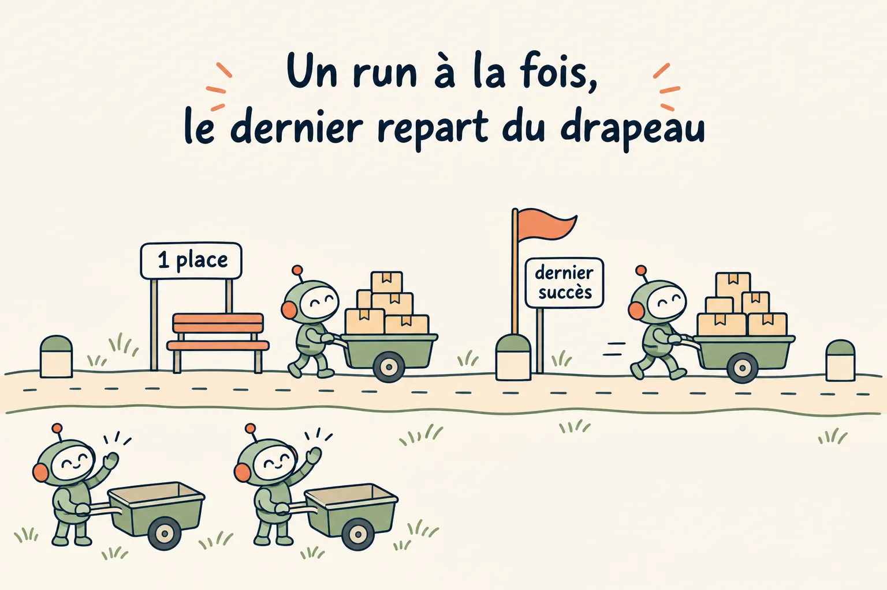
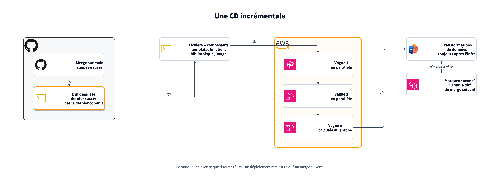
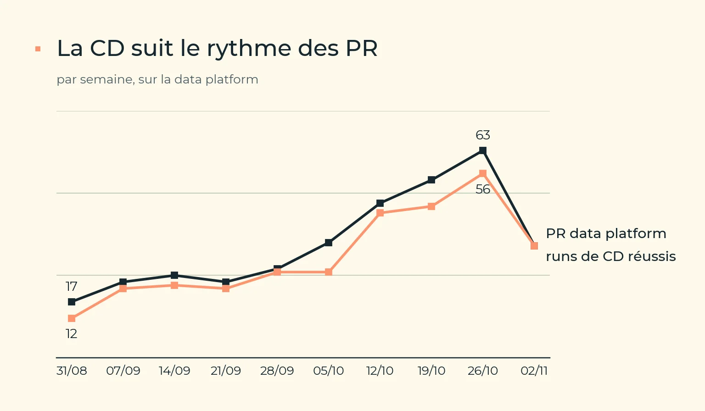
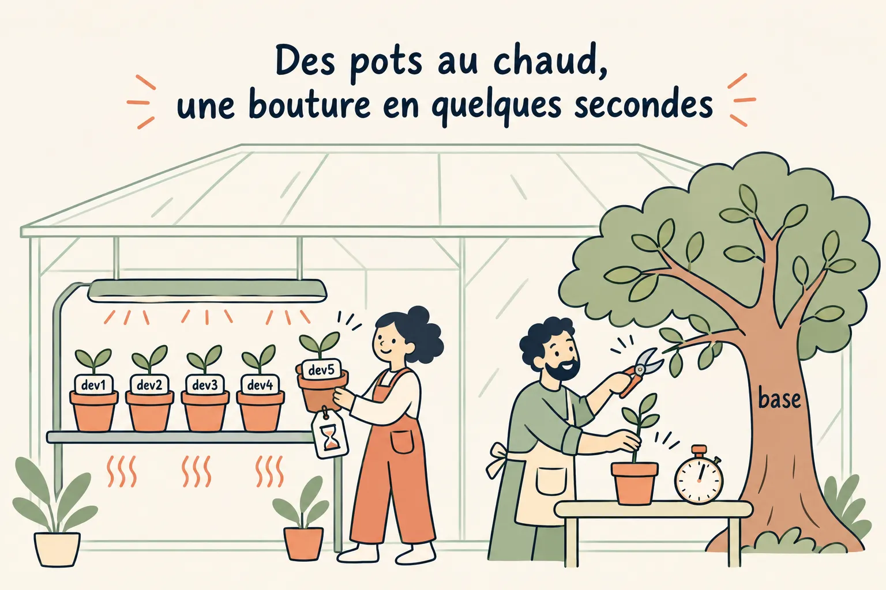
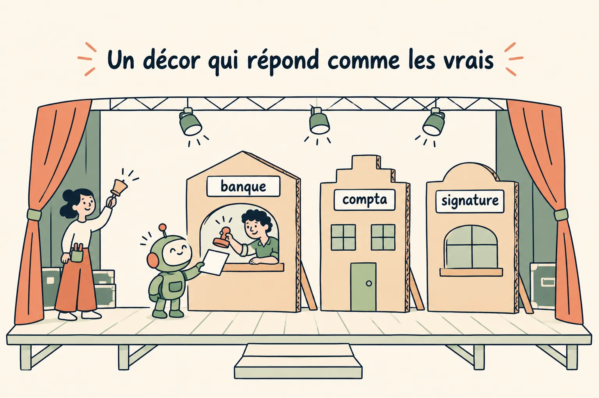

Chaque branche pousse à part, puis rejoint le tronc
Chaque branche du code pousse à part, sur un environnement à elle, avant de rejoindre le tronc, puis la production. Avec des agents, le nombre de PR monte vite. Si chaque merge redéploie tout, une stack à la fois, c'est la CD qui devient le goulot d'étranglement. On ne déploie donc que ce qui a changé depuis le dernier déploiement réussi, en parallèle quand le graphe de dépendances le permet. Et avant le merge, chaque humain et chaque agent exécute sa branche sur un environnement jetable, sans marcher sur les autres.
Le diff depuis le dernier succès, pas depuis le dernier commit
- Un marqueur par environnement : l'identifiant du dernier état déployé avec succès.
- Il n'avance que si tout a réussi, et jamais en arrière. Un seul composant l'écrit. Un merge qui a sauté la CD est rattrapé au suivant, et un déploiement échoué est rejoué.
- Un simple filtre de chemins ne suffit pas : un déploiement échoué ne serait jamais rejoué, puisque le commit suivant ne montre plus le changement.
- Un run à la fois, et une file d'une seule place. Le run en cours n'est jamais interrompu, sinon 2 runs se disputeraient le marqueur. Les merges qui arrivent pendant ce temps ne s'empilent pas : seul le dernier attend, les autres sont sautés. Rien n'est perdu, puisque le dernier part du dernier succès et livre d'un coup tout ce que les autres apportaient.
- Un garde contre les vieux runs : un run relancé qui arrive après un commit plus récent n'applique rien.

Data platform : le SHA du dernier déploiement réussi dans un paramètre SSM par environnement, puis git diff SHA..HEAD. App : le hash de l'arbre app/ comparé à celui d'un tag deployed/*, déplacé seulement après un déploiement réussi. L'auto-déploiement du PaaS est coupé, car il livrait chaque push sur main, même sans changement de l'app.
Du fichier modifié au composant, puis aux vagues
Une table de correspondance traduit chaque fichier modifié en composants à redéployer : un template donne sa stack, le code d'une fonction donne la stack de sa famille, une bibliothèque commune donne tous ses consommateurs, un verrou de dépendances donne les couches et les images.
Plutôt que de déployer un composant à la fois, on calcule ensuite des niveaux de dépendance à partir de ce que chaque composant produit et consomme, et chaque niveau part en parallèle. L'ordre n'a pas besoin d'être contrôlé après coup : le code qui refuserait un mauvais ordre est celui qui le produit.


L'ordre qui ne se négocie pas
L'infra d'abord, le catalogue ensuite, les transformations de données en dernier. Le premier merge qui ajoutait une table et la vue qui la lit est passé au rouge parce que la vue avait été créée avant la table. Mieux vaut sérialiser que tolérer une table manquante : une vue sautée reste en silence sur ses anciennes colonnes.
Les transformations tournent par défaut en mode plan : on compile et on liste ce qui serait supprimé, sans rien appliquer. L'outil ne propose pas de change set, ce mode en tient lieu.
Le même déploiement, sur un environnement à soi
Avant le merge, plusieurs humains et plusieurs agents travaillent en parallèle. Chacun a besoin d'un endroit où exécuter sa branche, avec la bonne base et des tiers qui ne coûtent rien. Le mécanisme de la CD sert aussi là : un environnement loué ne déploie que le diff de la branche par rapport à ce qu'il porte déjà. La forme de l'environnement, elle, dépend de ce qui coûte le plus cher.
Partir de ce qui coûte
| Ce qui coûte | La réponse |
|---|---|
| Créer l'infra (des dizaines de minutes à froid) | Un pool d'environnements gardés chauds, loués par une écriture conditionnelle, rendus sans être détruits. La branche suivante ne déploie que son diff. |
| Copier les données (une restauration complète par environnement) | Une copie copy-on-write de la base : quelques secondes, quelle que soit la taille. |

- Une branche de base par branche de code. Elle est créée au premier démarrage, puis réutilisée : le poste du développeur, l'agent et l'app de revue de la PR ouvrent sur les mêmes données. Personne n'a à la demander, et elle disparaît seule quand plus personne n'y touche.
- Un bail qui expire, et une CD qui libère l'environnement au merge. Sans ça, le pool se remplit de branches abandonnées.
- Un pool qui grandit jusqu'à un plafond. Quand aucun environnement n'est libre, on en crée un plutôt que de renoncer au test ; au-delà du plafond, c'est un humain qui décide d'en ajouter.
- Un échantillon, pas une copie de prod, sauf demande explicite. La source de données se choisit à la location : synthétique par défaut, vide, ou une copie de la sauvegarde de la nuit, jamais la prod elle-même.
- Une sauvegarde périmée fait échouer la location, plutôt que de servir en silence les données de l'avant-veille.
- Un garde-fou d'isolement exécutable : avant tout déploiement, il compare les cibles (base, cache, file de tâches) à celles de la prod et refuse si elles se recoupent. Il compare les valeurs sans jamais les afficher.
Des tiers simulés par défaut
Chaque service externe se règle par environnement : simulé (un serveur local qui répond, liste les appels reçus et déclenche les webhooks à la demande) ou bac à sable (identifiants de test uniquement). Les identifiants de prod ne sont jamais injectés ailleurs qu'en prod, et l'application doit pouvoir démarrer sans aucun accès à un tiers réel.

Où en est-on
| Brique | Statut |
|---|---|
| Pool d'environnements data loués, bail et expiration | en place |
| Un environnement isolé à la demande par agent | en place |
| Serveur de tiers simulés, piloté par requêtes | en place |
| Bout en bout sur données synthétiques | en place |
| Une branche de base copy-on-write par branche git | en place |
| Pseudonymisation de la base parente | en cours |
| Une app de revue par PR, lien posté sur la PR | en cours |
| Choix de la source de données et du mode des tiers à la location | à venir |
Nous avons jusqu'à 10 environnements AWS devN enregistrés dans DynamoDB : quand aucun n'est libre, make env en crée un, et au-delà de 10, l'agent doit le demander à un humain. Un bail de 3 h sans déploiement, destruction après 7 jours sans locataire. Côté app, un phony-server qui simule banque, comptabilité, signature et stockage, et une branche Neon par branche git. yarn db:branch, lancé à chaque démarrage du serveur de dev, la crée en quelques secondes à partir de la branche par défaut du projet Neon, qui porte la sauvegarde restaurée de la prod, ou la réutilise si elle existe ; l'app de revue de la PR fait de même au premier push. Chaque démarrage et chaque push repoussent son expiration à 2 jours, et son mot de passe, copié du parent, est réinitialisé dès qu'une app de revue l'adopte. Un devN lit et écrit la base de l'app dans la branche Neon de la branche git qui le loue, et plus dans la base de prod. Les agents tournent sur des MicroVM ou dans des workspaces Superset, avec leur propre rôle IAM. Sur une MicroVM, l'agent démarre l'app avec sa branche Neon, ouverte sans login, les secrets de dev tirés par le rôle de la machine, et les tâches de fond sur une branche de dev de Trigger.dev nommée d'après la branche git.
À essayer chez vous
- Un marqueur du dernier succès par environnement, qui n'avance que sur un succès complet.
- Des vagues calculées depuis le graphe de dépendances.
- Un run à la fois, une file où le dernier merge remplace ceux qui attendaient, et un garde contre les vieux runs relancés.
- Les données après l'infra, jamais en parallèle.
- Pool chaud si c'est l'infra qui coûte, copy-on-write si ce sont les données.
- Données synthétiques par défaut, tiers simulés par défaut.
- Un bail qui expire, une libération au merge.
- Un contrôle d'isolement qui compare aux cibles de prod avant d'écrire.